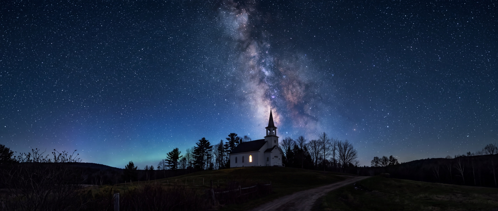

Our Story
Who We Are
Cornerstone Church exists to continue the ministry Jesus began — proclaiming good news to the poor, healing the brokenhearted, setting the captive free, and restoring sight to those in darkness.
Rooted in Isaiah 61 and Luke 4, our call is not simply to hold services — it's to be the presence of Christ in our community and our region.
We are a church for New England — committed to the full gospel: salvation, healing, the Holy Spirit, and the soon return of Jesus. Our vision is to see the northeast transformed, equipping and sending believers across the region.
“To see our region forever transformed by the Gospel, cultivating fully devoted, fully equipped, fully effective disciples of Jesus.”

What We Believe
Nine principles that shape how we worship, serve, and live together as a church community.
Missions
The Great Commission sends us both across the street and across the world. Cornerstone is actively partnered with local organizations and global missions efforts.
The Team
Meet the pastors, staff, and council who lead and serve our church family.
Meet the team